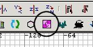
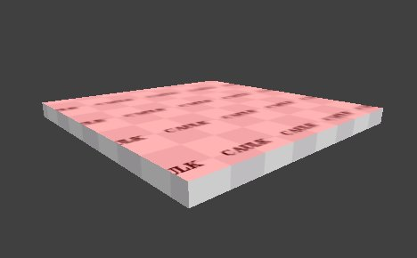

|
Textures - what's that all about then?
A texture is the name given to the image
applied to the face of a brush.
A brush typically has 6 faces, all of which
will have a texture applied. At the
simplest level a texture on a face will be a
JPG or TGA file of anything from a single
colour up to an image of the Mona
Lisa. Some special textures are used
for the faces that don't need to be drawn,
for example where two faces are flush
against each other, or a face faces away
from any player and will never be seen (and
so need not have a visible texture applied
to it).
One special texture for this purpose is
called Caulk. Faces with caulk on them
are not drawn, and so must never be
somewhere that a player could look at
it. You've probably played a map where
a caulked face is accidentally visible, and
you get a weird hall of mirrors effect while
you look at it. So you must ensure all
caulked faces cannot be seen.
In making a map you should be trying to
achieve your design aims using the least
number of brushes and the least number of
visible faces as possible. One way to achieve the latter is to
create your brushes initially entirely from
the caulk texture. Then you
"paint" the visible faces with the
required texture, safe in the knowledge that
all the other faces are caulked.
For example, say you created a brush to be
used as floor in a room. You decide to
make the whole brush a wood texture and you
slot the brush into place. You forget
to later caulk the bits you can no longer
see, so you end up with 5 other faces that
the engine must consider when deciding what
to draw, when if they had all been caulk it
would not present this overhead. It
may seem like small fry, but a map like
2tanks has 8,000 brushes, and so about
48,000 faces, which translates to around
96,000 triangles to be considered and
possibly drawn. As you want to try to
keep the maximum number of triangles drawn
to under perhaps 40,000 you need to ensure
you use caulk wherever possible.
So let's start correctly with the flat
square we've created. We're going to
make that the floor. We caulk an
entire brush by selecting the brush and
clicking the Caulk button.

Textures are applied in the 3D
window. Point at the top face of the
flat square and press
ctrl+shift+click. (To cancel the
face selection, press ESC. You can
select multiple faces by pointing at more
faces one at a time and ctrl+shift+click
them into the selection. You can
also deselect a selected face in the same
way.)

Now we need to tell Radiant what texture
to apply.
 At this stage it is unimportant that
your \etmain folder contains extra
PK3 files, like custom maps.
But as you get deeper into the
mapping it becomes important that
your \etmain folder doe not have
them. Radiant will show you
the textures in those PK3s as
available for you to choose.
And you will not realize that the
town you have lovingly created uses
25 textures scattered across lots of
other PK3s, and because they won't
be in your PK3 when you proudly
distribute your new map, everyone
else will see the ugly yellow/black
squares texture all over the place -
oops :(
At this stage it is unimportant that
your \etmain folder contains extra
PK3 files, like custom maps.
But as you get deeper into the
mapping it becomes important that
your \etmain folder doe not have
them. Radiant will show you
the textures in those PK3s as
available for you to choose.
And you will not realize that the
town you have lovingly created uses
25 textures scattered across lots of
other PK3s, and because they won't
be in your PK3 when you proudly
distribute your new map, everyone
else will see the ugly yellow/black
squares texture all over the place -
oops :(
|
Click the "textures" menu
item. You can now choose to see the
textures available under the various
folder names. It's a bit of trial
and error here as you go looking for the
texture you'd like. For now choose
Wood. All the textures in the folder
will now show in your textures
window. Don't worry about those that
show as red/black squares.
Click on one you like; I am using
wood_m05a_usata.
Ok, we've created a floor!
Next lesson
|